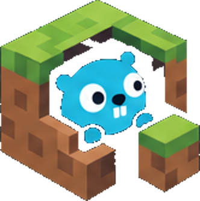

Le nom
Burrow est un moteur voxel écrit en Go. Le moteur ne sait pas quel jeu vous faites.
La mascotte est un animal qui vit dans un trou et regarde hors du sol. Le moteur voit votre monde pareil : une grille de blocs dans laquelle on peut creuser.
Ce site ne dépose aucun cookie, n'utilise aucun outil de mesure d'audience et ne charge aucune police, aucun script, aucune image ni vidéo depuis un autre serveur (une politique Content-Security-Policy stricte l'impose). Le Hub Burrow ne contacte la source de mises à jour qu'après votre accord, télécharge un seul fichier signé et n'envoie que sa version et votre système d'exploitation dans le User-Agent.